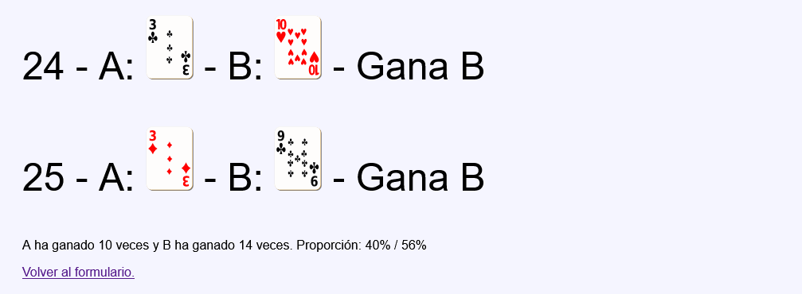
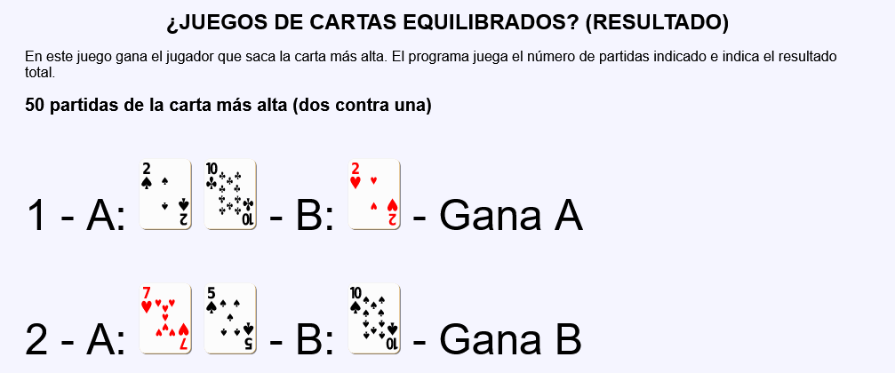

En este ejercicio se debe crear un programa que simule una partida de un juego de cartas. En este juego cada jugador saca un número de cartas numeradas correlativamente al azar. Habrá conseguido su objetivo si, al sacar alguna de las cartas, el número de orden coincide con el número de la carta. Gana el juego el jugador que haya conseguido su objetivo cuando el otro jugador no lo ha conseguido.
Nota:: El juego es casi equilibrado aunque el número de cartas no coincida, ya que la probabilidad de no conseguir el objetivo es casi del 36,8% a partir de 5 cartas (exactamente !n/n! siendo n el número de cartas).
¿Juegos de cartas equilibrados? - Comentarios
El programa tendrá dos páginas:
La primera página muestra un formulario con dos controles:
El nombre del juego a jugar (ninguno, una contra una o dos contra una).
El número de partidas a jugar (de 20 a 200 partidas).
La segunda página mostrará:
Los posibles errores debido al mal uso del formulario o a su manipulación.
El número de partidas del juego seleccionado, el resultado de cada partida y una estadística final del resultado global.
En los dos juegos el ganador es el jugador que obtiene la carta más alta. En el juego una contra una, cada jugador saca una carta al azar del 1 al 10 de un palo al azar. En el juego dos contra una, el jugador A saca dos cartas y el jugador B saca una carta.
Si se intenta acceder directamente a la segunda página sin pasar por la primera o si se envía a la segunda página información distinta a la esperada, se mostrarán mensajes de error con la información faltante o incorrecta.
Los palos de los jugadores deben ser distintos.
No se deben cambiar los nombres de los controles incluidos en las plantillas.
Al actualizar la segunda página, se mostrará un contenido distinto, pero sin modificarse el juego y el número de partidas.
Capturas de pantalla de ejemplo:


¿Juegos de cartas equilibrados? - Ejemplo de código HTML
<h2>50 partidas de la carta más alta (dos contra una)</h2>
<p style="font-size: 300%;">
1 -
A: <img src="img/cartas/d7.svg" alt="d7" width="60">
<img src="img/cartas/c5.svg" alt="c5" width="60"> -
B: <img src="img/cartas/c8.svg" alt="c8" width="60"> -
Gana B
</p>
...
<p style="font-size: 300%;">
50 -
A: <img src="img/cartas/p5.svg" alt="p5" width="60">
<img src="img/cartas/p4.svg" alt="p4" width="60"> -
B: <img src="img/cartas/c1.svg" alt="c1" width="60"> -
Gana A
</p>
<p>A ha ganado 29 veces y B ha ganado 17 veces. Proporción: 58% / 34% </p>